September 28, 2022
BeReal taken with Jonah, Nano, and Sean. This was taken in
front of the Warren mailroom. I'm pretty sure we were picking up a
package for Sean from his mom which we subsequently called a bomb.
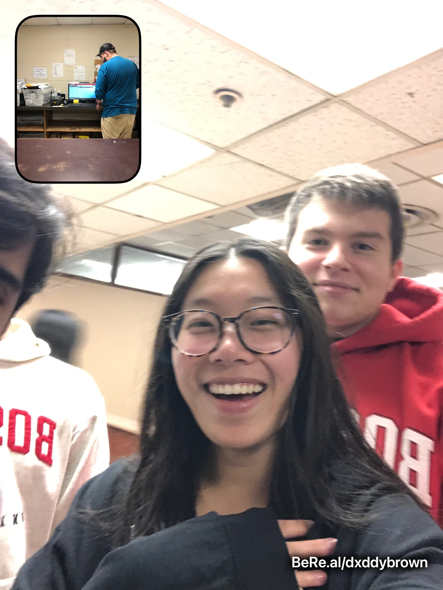
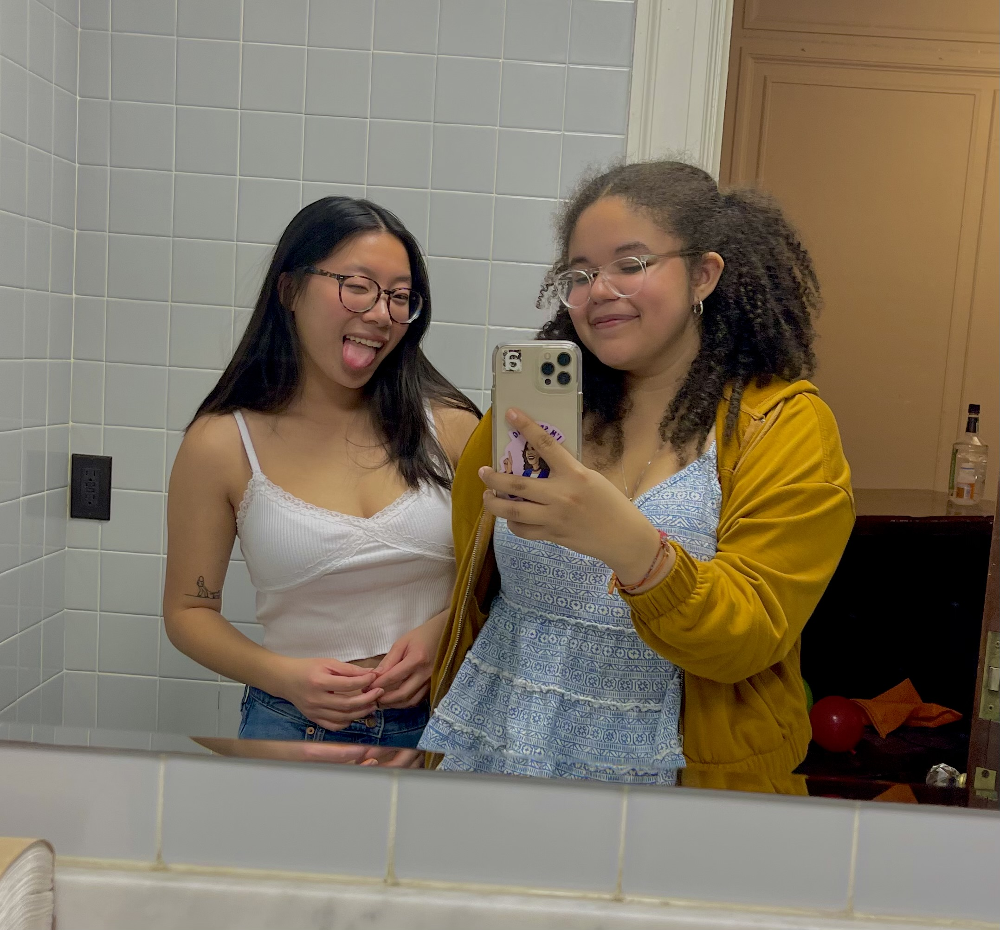
December 11, 2022
Selfie in Sigma Nu bathroom with Alyssa! This party started my friendship with Alex because Alyssa lost her ID in the house and we went back to look for it. I also stole a handle on this night, but if any actually asks, no I didn't.
Selfie in Sigma Nu bathroom with Alyssa! This party started my friendship with Alex because Alyssa lost her ID in the house and we went back to look for it. I also stole a handle on this night, but if any actually asks, no I didn't.
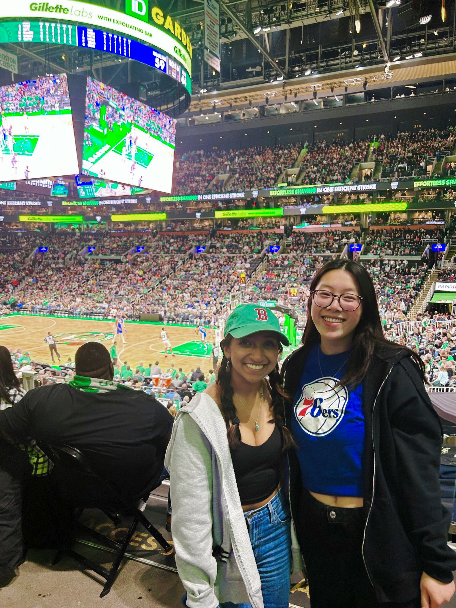
February 8, 2023
Maya surprised me with tickets to the Sixers vs. Celtics game for my birthday! The Sixers ended up losing, but this was one of the best birthday gifts I have ever received. I love watching basketball live and being there with Maya made it even better. I alo wonder what happened to that selfie we took with that random man because I looked good in it.
Maya surprised me with tickets to the Sixers vs. Celtics game for my birthday! The Sixers ended up losing, but this was one of the best birthday gifts I have ever received. I love watching basketball live and being there with Maya made it even better. I alo wonder what happened to that selfie we took with that random man because I looked good in it.
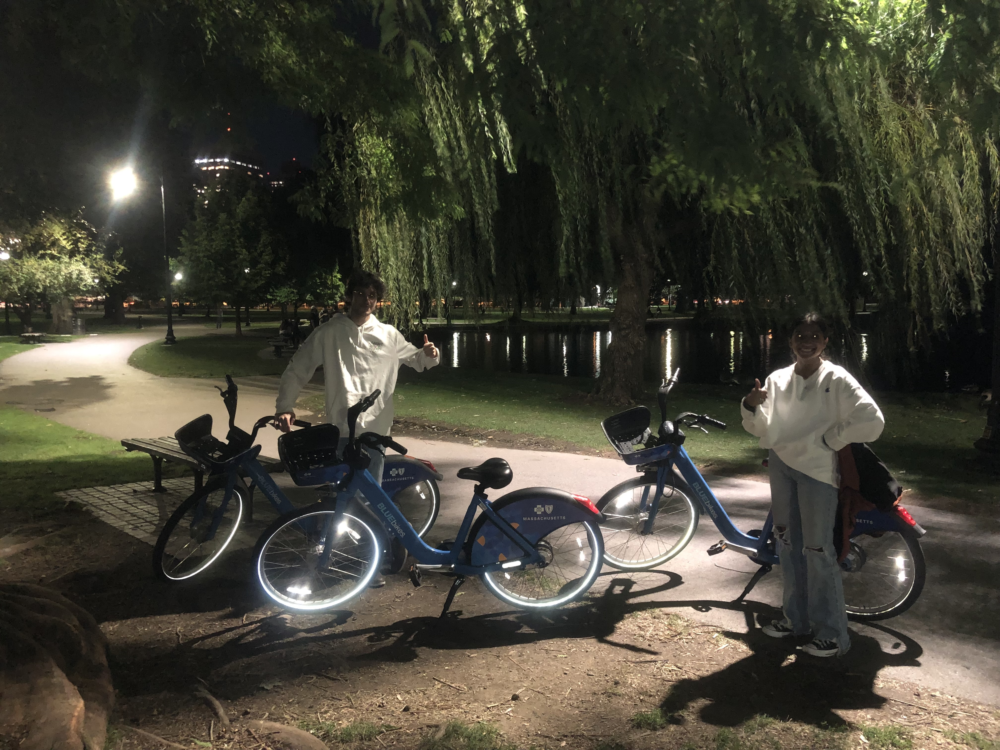
October 8, 2022
Maya, Suneh, and I decided to rent BluBikes and go to the Commons. It was my first time on a bike in a WHILE so I struggled a bit. After the Commons, we took the bikes to the ONLY restaurant in Boston that's open past 11PM and had some good eats.
Maya, Suneh, and I decided to rent BluBikes and go to the Commons. It was my first time on a bike in a WHILE so I struggled a bit. After the Commons, we took the bikes to the ONLY restaurant in Boston that's open past 11PM and had some good eats.
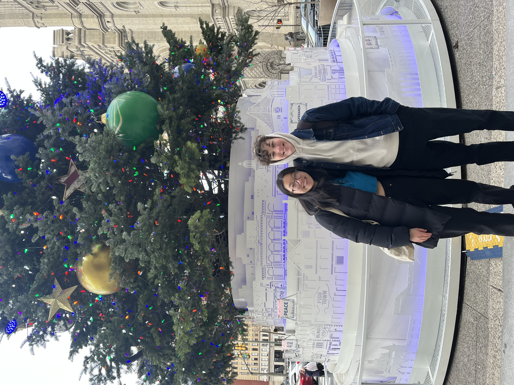
December 14, 2022
Me and Ryan met up at the Philly Christmas Village! Maya, Geneva, and I roadtripped from Boston to Philly so the two of them could see Peach Pit. Seeing Ryan was so fun, and I was glad I got to bring Maya and Geneva to Reading Market (and that Maya saw and Amish person for the first time)!
Me and Ryan met up at the Philly Christmas Village! Maya, Geneva, and I roadtripped from Boston to Philly so the two of them could see Peach Pit. Seeing Ryan was so fun, and I was glad I got to bring Maya and Geneva to Reading Market (and that Maya saw and Amish person for the first time)!
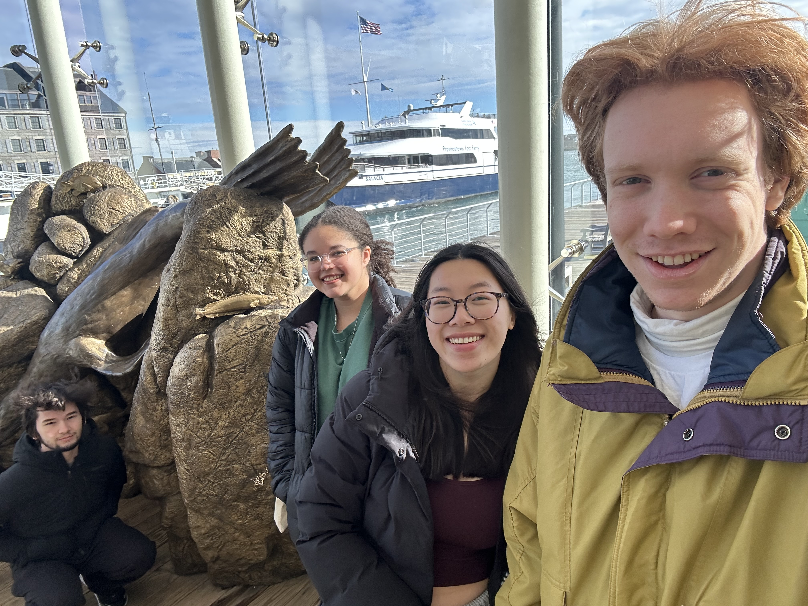
March 7, 2023
Sean, Alyssa, Isaac and me at the New England Aquarium! We woke up at 8AM to get to there--and navigated our way there surprisingly easily. I agree with Isaac's stance that we should've taken edibles beforehand.
Sean, Alyssa, Isaac and me at the New England Aquarium! We woke up at 8AM to get to there--and navigated our way there surprisingly easily. I agree with Isaac's stance that we should've taken edibles beforehand.

April 28, 2023
2 year anniversary dinner with Maya! This was a memorable night for so many reasons. Walking through Kenmore after a Sox game in that dress, getting my fake taken at Earl's, and stealing a glass from Rochambeau. But I wouldn't have wanted to do it with anyone else.
2 year anniversary dinner with Maya! This was a memorable night for so many reasons. Walking through Kenmore after a Sox game in that dress, getting my fake taken at Earl's, and stealing a glass from Rochambeau. But I wouldn't have wanted to do it with anyone else.
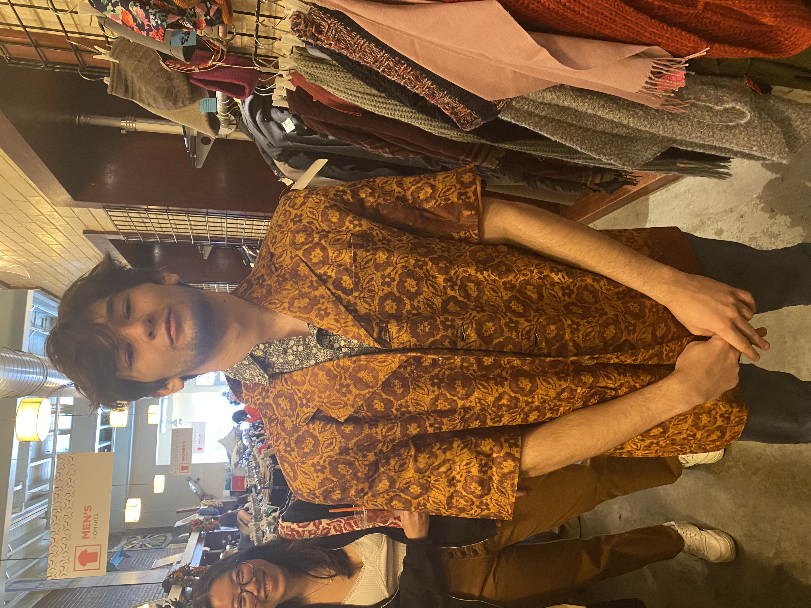
October 15, 2022
This was one of the floor field trips that I organized in the beginning of the year. We had quite an interesting group for this one. This pic was captured by Jonah at Boomerangs in Cambridge.
This was one of the floor field trips that I organized in the beginning of the year. We had quite an interesting group for this one. This pic was captured by Jonah at Boomerangs in Cambridge.
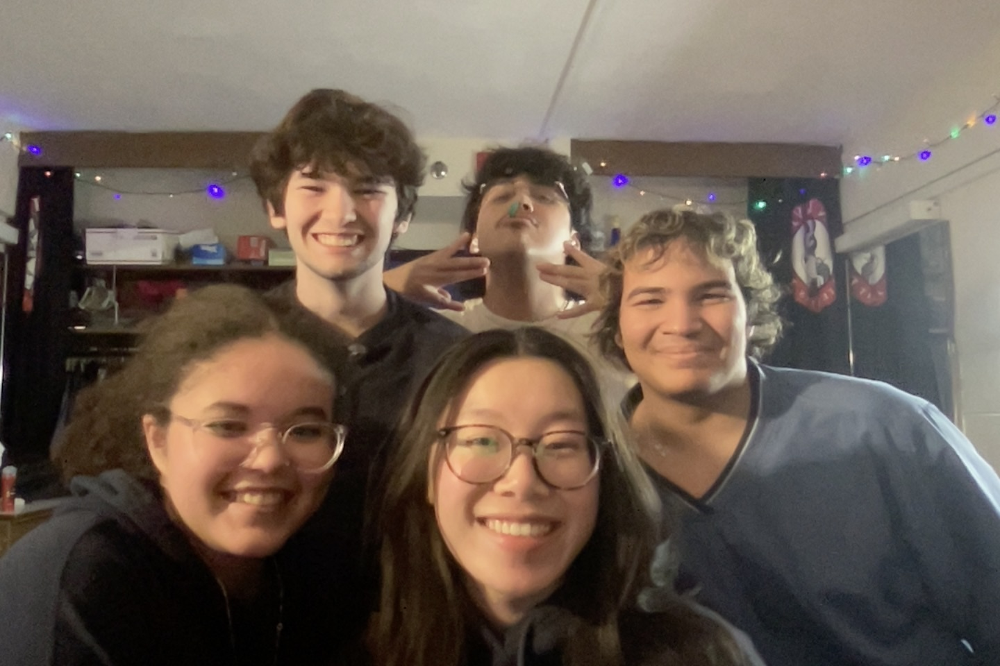
January 31, 2023
This is truly one of my favorite photos from this year. We're missing a few people, but everyone in it makes me so happy. Girlies4L
This is truly one of my favorite photos from this year. We're missing a few people, but everyone in it makes me so happy. Girlies4L
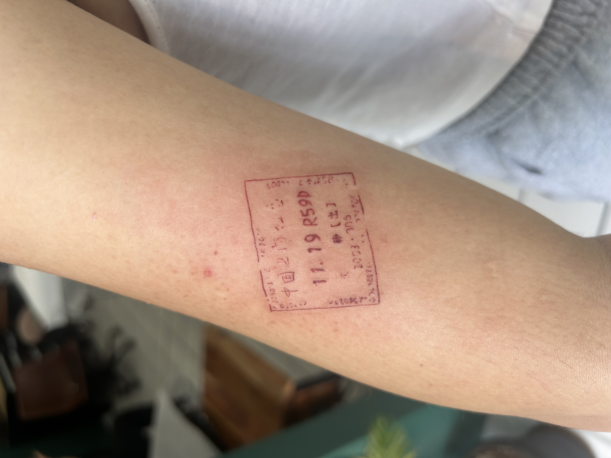
April 6, 2023
Here is the long-awaited 2nd tattoo. Personally I love it way more than my first and was in genuine shock and how it did not hurt. At all. And I don't want to sound like one of "those people" when I say that. But I'm being honest! Best tattoo with a happy meaning.
Here is the long-awaited 2nd tattoo. Personally I love it way more than my first and was in genuine shock and how it did not hurt. At all. And I don't want to sound like one of "those people" when I say that. But I'm being honest! Best tattoo with a happy meaning.
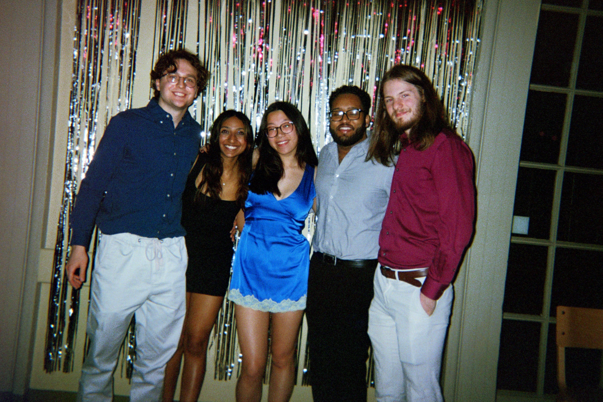
May 5, 2023
Group photo taken by a pushy man at the MIT SHPE Gala. This was a fun night...after we went back to Warren and pregamed some more.
Group photo taken by a pushy man at the MIT SHPE Gala. This was a fun night...after we went back to Warren and pregamed some more.
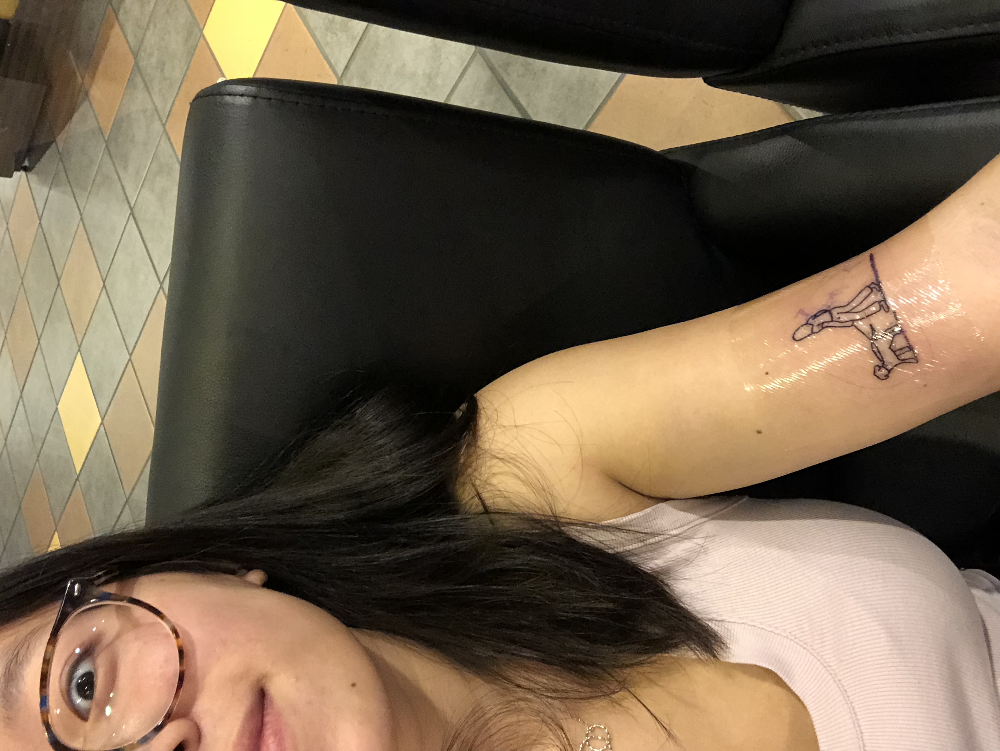
November 5, 2022
Well. I did it. I think you can see in my face all of the immediate shock and regret. But I got over it and now I have a cool tattoo. But holy shit this one hurt.
Well. I did it. I think you can see in my face all of the immediate shock and regret. But I got over it and now I have a cool tattoo. But holy shit this one hurt.
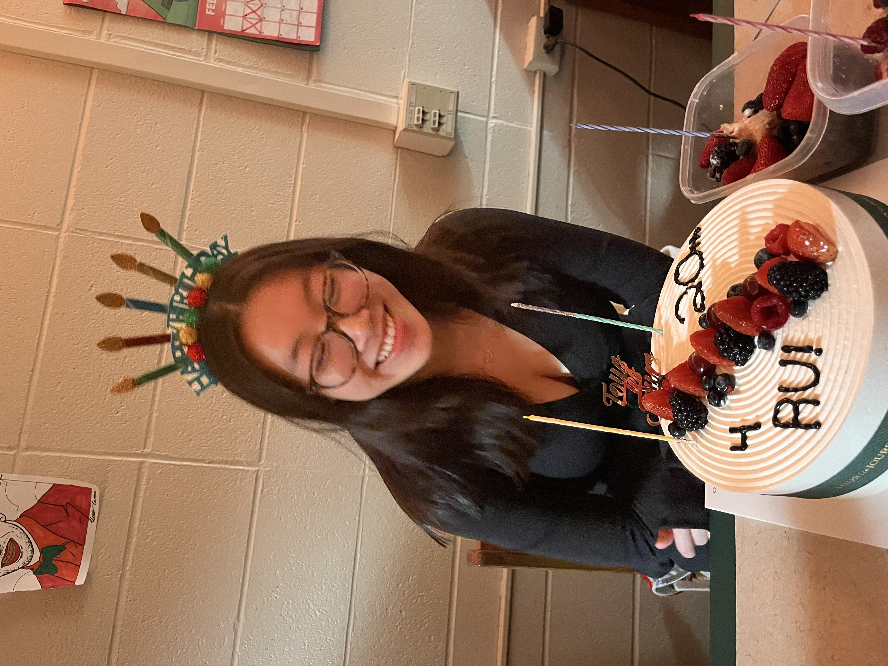
February 7, 2023
My 20th birthday. I'm not gonna lie, this was a rough day. A lot of my family forgot it was my birthday and then people kept dropping out the dinner left and right. But it's fine because Maya and Geneva pulled through with this delicious ass cake. And Rishab surprised me in person with mochinut donuts which were so good. I got to be with all of my friends in this moment and I was smiling so big.
My 20th birthday. I'm not gonna lie, this was a rough day. A lot of my family forgot it was my birthday and then people kept dropping out the dinner left and right. But it's fine because Maya and Geneva pulled through with this delicious ass cake. And Rishab surprised me in person with mochinut donuts which were so good. I got to be with all of my friends in this moment and I was smiling so big.
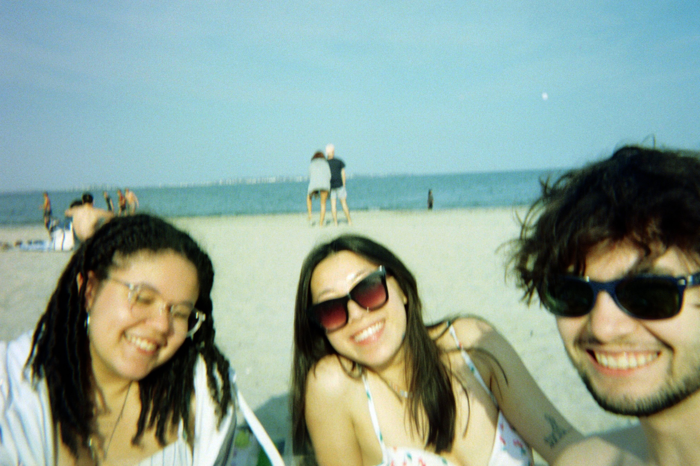
April 14, 2023
Revere Beach Day! Alyssa, Sean, and I met up with Maya and Patt and we all had some fun. I love this picture because we look so happy. Alyssa's beach playlist is elite.
Revere Beach Day! Alyssa, Sean, and I met up with Maya and Patt and we all had some fun. I love this picture because we look so happy. Alyssa's beach playlist is elite.
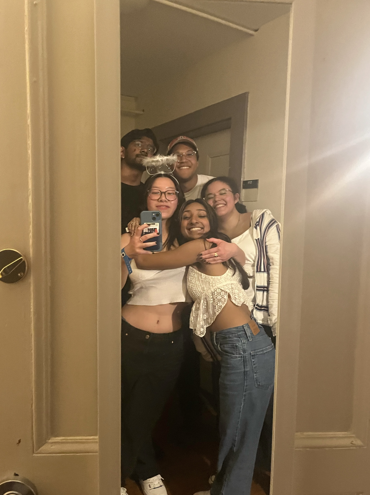
February 25, 2023
This night was a catalyst for a lot of things. Insane plotting was going on in the background and I was left alone at the after party, but it's okay because I got to hang with some cool people. 9/10 party and I don't think I stole anything this time.
This night was a catalyst for a lot of things. Insane plotting was going on in the background and I was left alone at the after party, but it's okay because I got to hang with some cool people. 9/10 party and I don't think I stole anything this time.